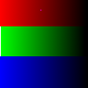
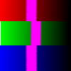
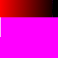
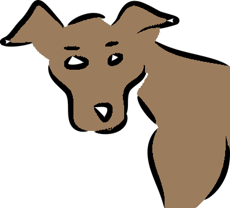

This tool fills a selection with the current foreground color. If you Ctrl+click and use the Bucket tool, it will use the background color instead. Depending on how the tool options are set, the Bucket Fill tool will either fill the entire selection, or only parts whose colors are similar to the point you click on. The tool options also affect the way transparency is handled.
The amount of fill depends on what Fill Threshold you have specified. The fill threshold determines how far the fill will spread (similar to the way in which the Fuzzy Select tool works). The fill starts at the point where you click and spreads outward until the color or alpha value becomes “too different”.
When you fill objects in a transparent layer (such as letters in a text layer) with a different color than before, you may find that a border of the old color still surrounds the objects. This is due to a low fill-threshold in the Bucket Fill options dialog. With a low threshold, the bucket tool won't fill semi-transparent pixels, and they will stand out against the fill because they have kept their original color.
If you want to fill areas that are totally transparent, you have to make sure that the “Lock” option (in the Layers dialog) is unchecked. If this option is checked, only the non-transparent parts of the layer will be filled.
There are different possibilities to activate the tool:
-
From the main menu: → → .
-
By clicking the tool icon in the Toolbox.
-
By pressing the Shift+B keyboard shortcut.
-
Ctrl, similarly to paint tools, allows you to pick surrounding colors on canvas without having to switch to Color Picker tool.
-
Shift toggles the use of Fill Similar Color or Fill Whole Selection on the fly.
-
Alt toggles Fill type between FG and BG colors.

Normally, tool options are displayed in a window attached under the Toolbox as soon as you activate a tool. If they are not, you can access them from the main menu through → → which opens the option window of the selected tool. The available tool options can also be accessed by double clicking the corresponding tool icon in the Toolbox.
- Mode, Opacity
-
See Paint Tools for help with options that are common to all these tools. Only options that are specific to the Bucket Fill tool are explained here.
- Fill Type
-
GIMP provides three fill types:
- FG Color Fill
-
sets the fill color to the currently selected foreground color.
- BG Color Fill
-
sets the fill color to the currently selected background color.
- Pattern Fill
-
sets the fill color to the currently selected pattern. You can select the pattern to use in a drop-down list.
This drop-down list allows the user to select one of many fill patterns to use on the next fill operation. The manner in which the list is presented is controlled by the four buttons at the bottom of the selector.
- Affected Area
-
-
Fill whole selection makes GIMP fill a pre-existent selection or the whole layer. A quicker approach to do the same thing could be to click and drag the foreground, background or pattern color, leaving it onto the selection. Also, pressing Ctrl key allows you to pick a color on the image as foreground color.
-
Fill similar colors: this is the default setting: the tool fills the area with a color near the pixel onto you have clicked. The color similarity is defined by options in Finding Similar Colors. Click and drag to fill.
-
Fill by line art detection: This allows you to fill areas surrounded by “line arts”, trying to leave no unfilled pixels near the lines, and closing potential zones.
Line art detection is also known as Smart Colorization. The author describes clearly problems he met in https://girinstud.io/news/2019/02/smart-colorization-in-gimp/. Options are described below.
-
- Finding Similar Colors
-
These options appear when the Fill similar colors option is checked:
-
The option Fill Transparent Areas offers the possibility of filling areas with low opacity.
-
Sample merged: If you enable this option, sampling is not calculated only from the values of the active layer, but from all visible layers.
For more information, see the Glossary entry.
-
To understand what diagonal neighbors are, please refer to Diagonal-neighbors in Fuzzy Select tool.
-
Please refer to Anti-aliasing in Glossary.
-
The Threshold slider sets the level at which color weights are measured for fill boundaries. A higher setting will fill more of a multi colored image and conversely, a lower setting will fill less area.
-
With the Fill by option you can choose which component of the image GIMP shall use to calculate the similarity and to determine the borders of filling.
The components you can choose from are , , , , , , , , , , .
This option is not easy to understand. You have chosen, for example, the Red channel. When you click on any pixel, the tool searches for contiguous pixels similar for the red channel to the clicked pixel, according to the set threshold. Here is an example:
Original image: three strips with gradients of pure colors. Red (255;0;0), Green (0;255;0), Blue (0;0;255). We are going to use the Bucket-fill tool with the magenta color and a Threshold set to 15.
Image 1: Fill By = Composite. We successively clicked in the three color strips. Every strip is filled according to the threshold.
Image 2: Fill By = Red. We clicked in the red strip. The tool searches for contiguous pixels which have a similar value in the red channel, according to the set threshold. Only a narrow area corresponds to these standards. In the green and the blue strip, the value of pixels in the red channel is 0, very much different from the red channel value of the clicked pixel: the color doesn't spread to them.
Image 3: Fill By = Red. We clicked in the green strip. There, the value of the clicked pixel in the red channel is 0. All pixels in the green and the blue strips have the same red channel value (0): they are all painted.
Figure 14.51. Example for “Fill By”

Original image

Image 1

Image 2

Image 3
-
- Line Art Detection
-
These options appear when the Fill by line art detection option is checked:
Figure 14.52. “Fill by line art detection” example


Bucket fill tool applied by click-and-drag with default options. They don't well fit this image, especially on eyebrows that are almost wiped off.
-
Source: by default, information for line art computation is taken from All visible layers. You can also select the Selected layer, the Layer below the selected one, or the Layer above the selected one as the source.
-
Detect opacity rather than grayscale: fills completely transparent regions.
-
Line art detection threshold: threshold to detect contour (higher values will detect more pixels).
-
- Line Art Closure
-
These options appear when the Fill by line art detection option is checked:
-
Automatic closure: When this option is enabled, Maximum gap length defines the maximum gap (in pixels) in line art which can be closed.
-
Manual closure in fill layer: when enabled, consider pixels of the selected line art source layer that are using the selected fill color as line art closure.
This setting is only enabled when the line art source is Layer below the selected one, or Layer above the selected one.
When your line art sketch has holes, you can fill these holes with a brush in the fill color on a layer above or below it, before using bucket fill on your color layer. Especially on larger images this can be faster than selecting All visible layers as source.
Layer below the selected one would be most useful when you are coloring a scanned sketch, while Layer above the selected one can be used when you are sketching yourself and filling the colors below the sketch.
-
- Fill borders
-
These options appear when the Fill by line art detection option is checked:
-
Maximum growing size: maximum number of pixels grown under the line art. Increasing this value makes lines thinner.

To improve eyebrows in the example, Maximum growing size is reduced to 1.
-
Feather edges: feathers fill edges.

-
Stroke borders: stroke fill borders with the stroke options of the paint tool selected in the dropdown below.
-